- Em 1988, John substituiu Hillel Slovak, guitarrista original do RHCP, que faleceu por overdose. Era um grande fã da banda antes de entrar.
- Primeira saída (1992): Durante a turnê de Blood Sugar Sex Magik, sentiu que a banda estava ficando muito popular e não suportou a pressão.
- Segunda saída (2009): Saiu para focar em sua carreira solo e em projetos experimentais.
- Após 10 anos afastado, voltou ao RHCP substituindo Josh Klinghoffer.
- Mothers Milk (1989)
- Blood Sugar Sex Magik (1991)
- Californication (1999)
- By the Way (2002)
- Stadium Arcadium (2006)
- Unlimited Love (2022)
- Return of the Dream Canteen (2022)
- Hendrix
- Jimmy Page
- David Gilmour
- Eddie Van Halen
- Frank Zappa
- A partir dos anos 2000, começou a se aprofundar em synths, drum machines e técnicas de produção eletrônica.
- Foi influenciado por Aphex Twin e Squarepusher.
- Prefere tocar com sentimento do que com velocidade ou técnica avançada.
- Muitas notas que ele toca são expressivas por conta desses detalhes.
- Exemplo: Scar Tissue, Californication e Dani California.
- Não gosta de exagerar nos acordes e solos, sempre optando por melodias simples e marcantes.
- Niandra LaDes and Usually Just a T-Shirt (1994) 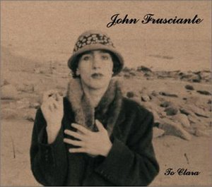
- Smile from the Streets You Hold (1997)
- To Record Only Water for Ten Days (2001) 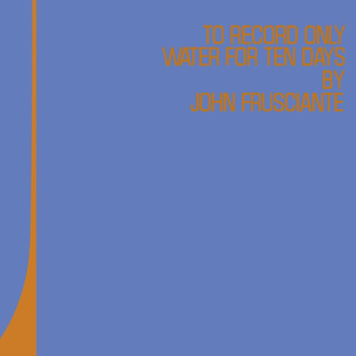
- Shadows Collide with People (2004)
- The Will to Death (2004) 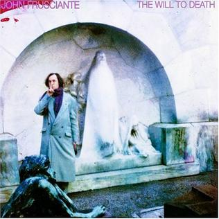
- Inside of Emptiness (2004) 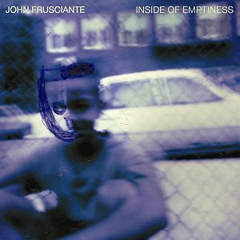
- A Sphere in the Heart of Silence (2004) 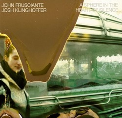
- Curtains (2005) 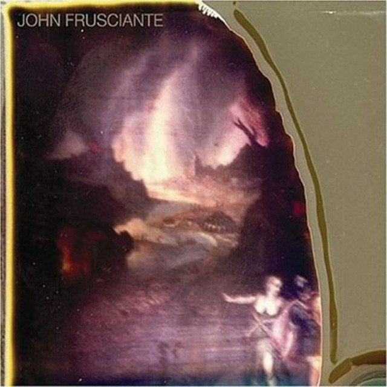
- The Empyrean (2009) 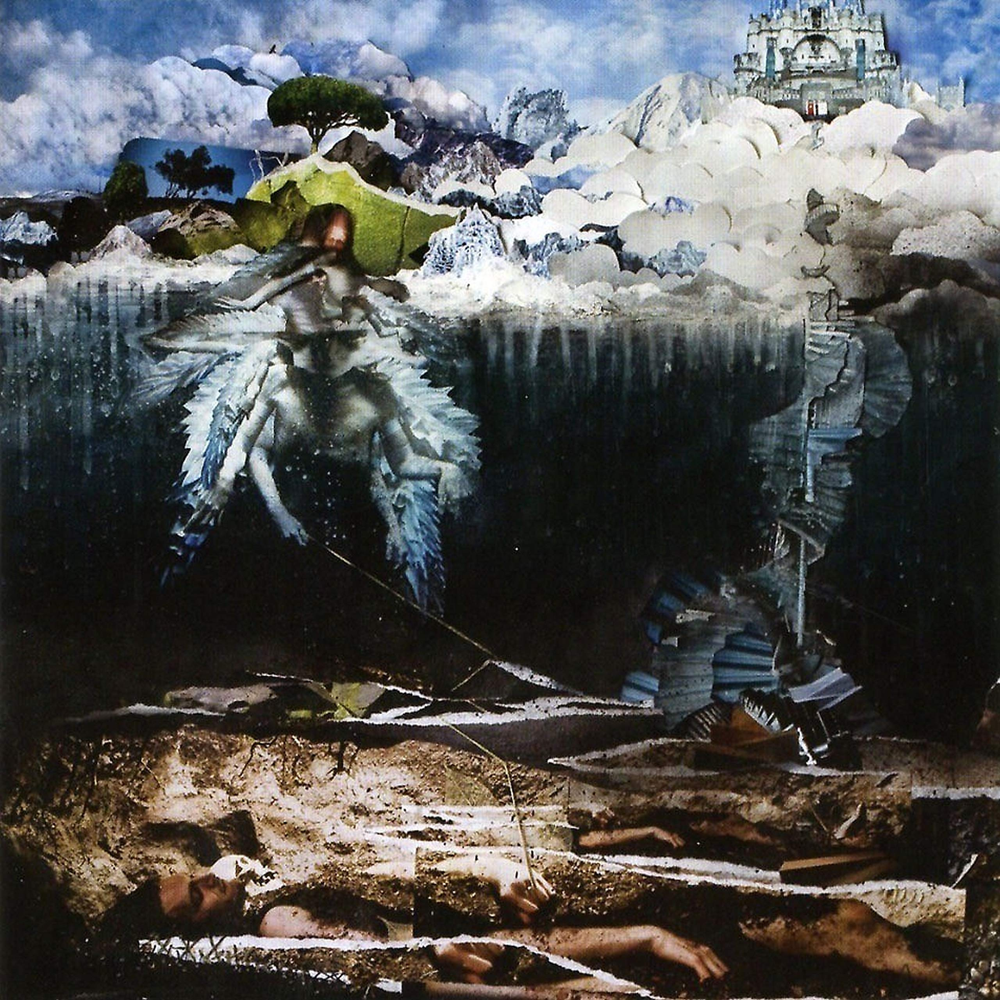
- Josh Klinghoffer
- Omar Rodríguez-López (The Mars Volta)
- e até o rapper Denzel Curry.
- Após sair do RHCP em 1992, ficou viciado em heroína e cocaína.
- Seus dentes apodreceram, perdeu peso e vivia isolado.
- Foi salvo por amigos e passou por reabilitação em 1998.
- Durante seus anos longe da música, focou em artes visuais.
- Seu gosto cinematográfico influenciou suas músicas.
- Já falou sobre vegetarianismo, mas não segue estritamente.
- Fender Stratocaster 1962 Sunburst (sua principal) 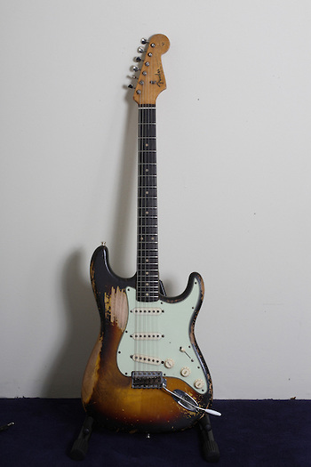
- Fender Jaguar 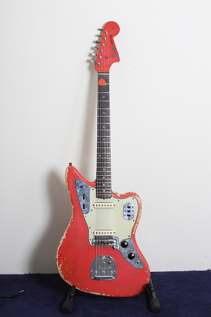
- Gibson SG 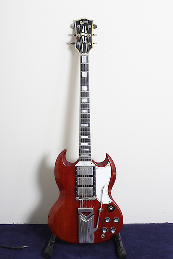
- Gretsch White Falcon 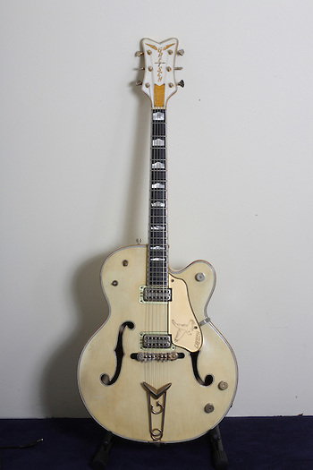
- Telecaster 1960 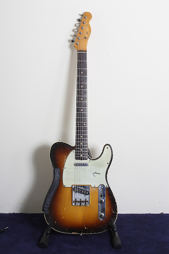
- Marshall Major/Silver Jubilee 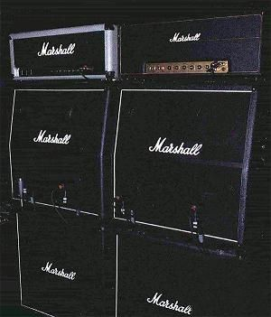
- Fender Showman 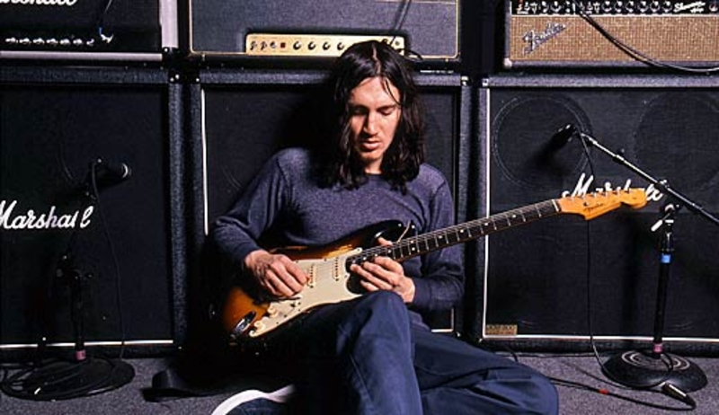
- Boss DS-1 e DS-2 (distortion) 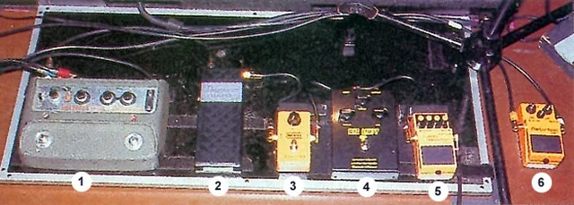
- Electro-Harmonix Big Muff (fuzz) 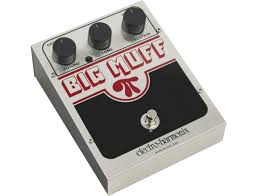
- Ibanez WH-10 (wah-wah) 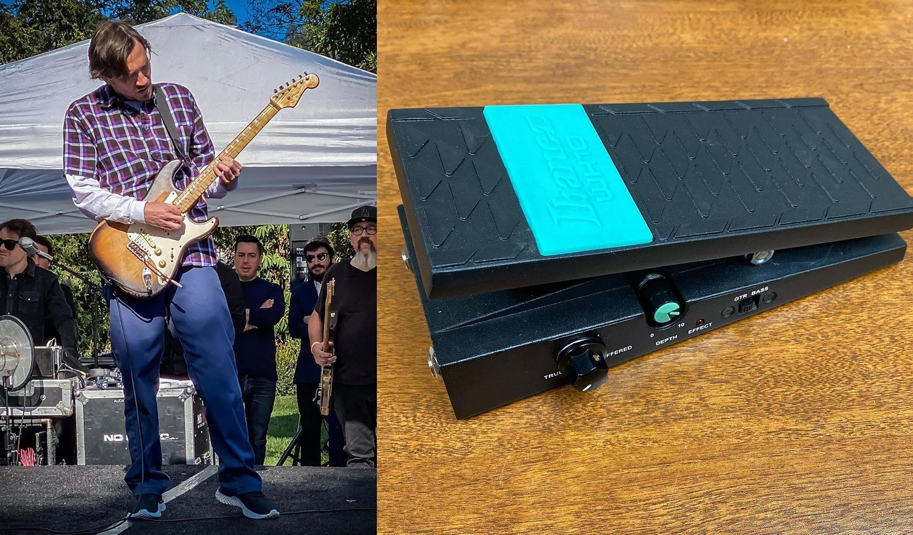
- Usa cordas DAddario .010-.046. 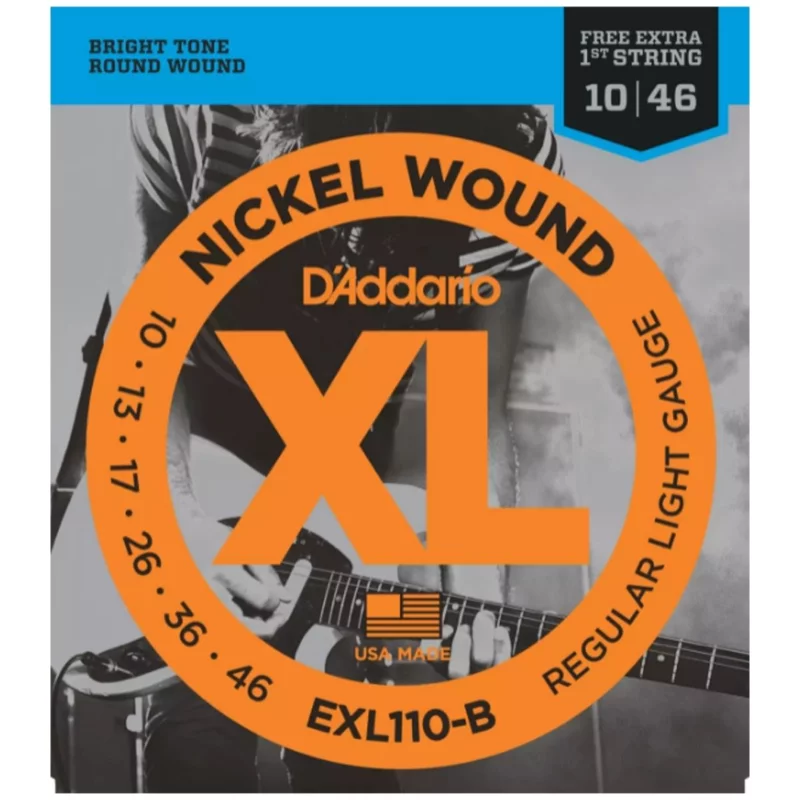
- Prefere palhetas Dunlop .60mm. 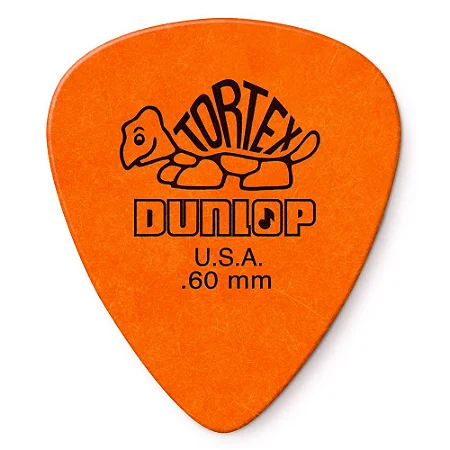
1. Entrou na banda aos 18 anos
2. Saiu da banda duas vezes
3.Retorno em 2019
4.Álbuns que gravou com o RHCP
Influências músicais
Ídolos da guitarra
Amor pela música eletrônica e experimental
Técnica e Estilo Musical
Guitarrista com pegada emocional
Uso de bends e vibratos marcantes
Criação de solos melódicos
Uso minimalista da guitarra
Carreira Solo e Trabalhos Paralelos


Fez parcerias com artistas como
🎭 Vida Pessoal e Curiosidades
Quase morreu por uso de drogas
Adora pintar e desenhar
Gosta de filmes experimentais
Vegetariano por um tempo
🎸 Equipamento e Som
Guitarras icônicas
Usa amplificadores clássicos
Pedais favoritos
Corda e palheta
Parallel Universe(Slane Castle 2003)
Californication (Slane Castle 2003)
Californication (Chorzow 2007)
Scar Tissue (Slane Castle 2003)
Wet sand (Fuji Rock 2006)
Dont't forget me (La cigale 2006)
Final jam (Chorzow 2007)
Final jam (Fuji rock 2006)